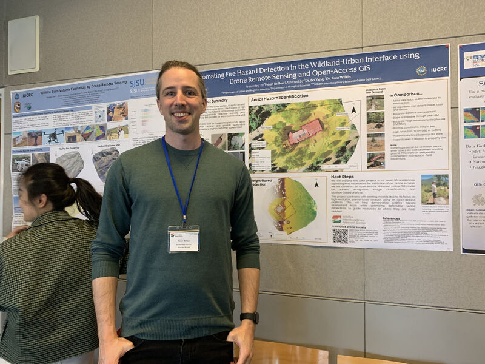

NSF Funds Innovations: Wildfire Research Research Secure Industry Advisory Support
Exciting news! We are thrilled to announce that both of our Industry Advisory Board proposals to the Wildfire Interdisciplinary Research Center have successfully secured funding from the National Science Foundation (NSF) IUCRC. The projects, "Post-Wildfire Fuels Management using a Multi-source Remote Sensing Approach" and "Enhancing Community Fire Resilience Decision-Making: Drone Inspection for Home Ignition Zone," stood out in a highly competitive pool of proposals. This significant achievement marks a major milestone for our group. Congratulations to everyone involved for their hard work and dedication! This success paves the way for further innovative research in wildfire management and community safety. 🎉

